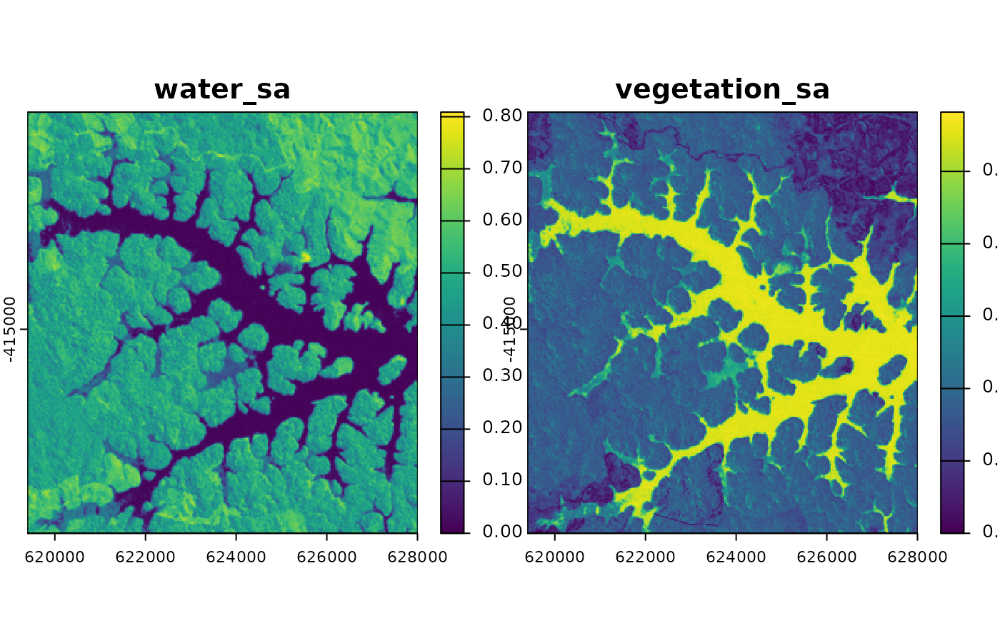
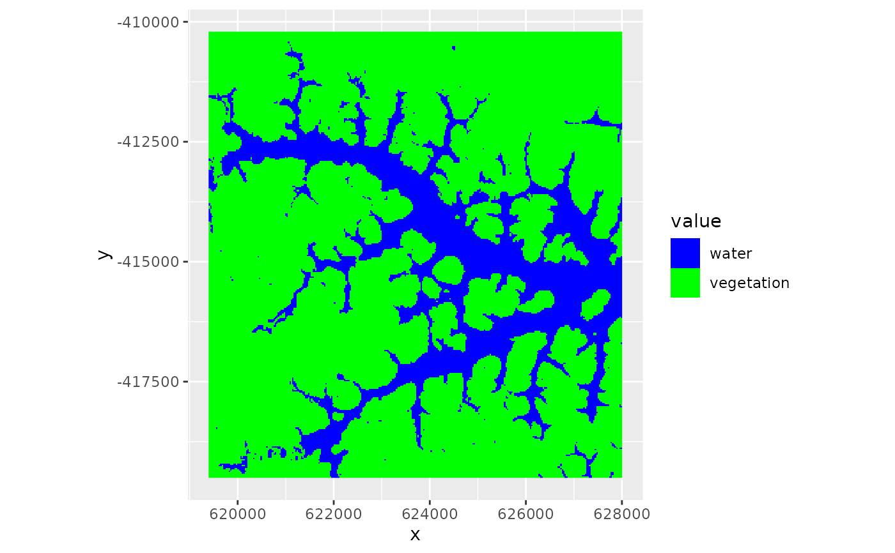

Calculates the angle in spectral space between pixels and a set of reference spectra (endmembers) for image classification based on spectral similarity.
Arguments
- img
SpatRaster. Remote sensing imagery.
- em
Matrix or data.frame with endmembers. Each row should contain the endmember spectrum of a class, i.e. columns correspond to bands in
img. It is reccomended to set the rownames to class names.- angles
Logical. If
TRUEa RasterBrick containing each one layer per endmember will be returned containing the spectral angles.- ...
further arguments to be passed to
writeRaster
Value
SpatRaster
If angles = FALSE a single Layer will be returned in which each pixel is assigned to the closest endmember class (integer pixel values correspond to row order of em.
Details
For each pixel the spectral angle mapper calculates the angle between the vector defined by the pixel values and each endmember vector. The result of this is one raster layer for each endmember containing the spectral angle. The smaller the spectral angle the more similar a pixel is to a given endmember class. In a second step one can the go ahead an enforce thresholds of maximum angles or simply classify each pixel to the most similar endmember.
Examples
library(terra)
library(ggplot2)
## Sample endmember spectra
## First location is water, second is open agricultural vegetation
pts <- data.frame(x = c(624720, 627480), y = c(-414690, -411090))
endmembers <- extract(lsat, pts)
rownames(endmembers) <- c("water", "vegetation")
## Calculate spectral angles
lsat_sam <- sam(lsat, endmembers, angles = TRUE)
plot(lsat_sam)

## Classify based on minimum angle
lsat_sam <- sam(lsat, endmembers, angles = FALSE)
ggR(lsat_sam, forceCat = TRUE, geom_raster=TRUE) +
scale_fill_manual(values = c("blue", "green"), labels = c("water", "vegetation"))
